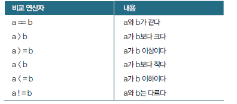

1. 이번 단원에서 배우는 것
기본 문법 1에서 값과 자료형을 배웠다면, 이번 단원에서는 프로그램의 흐름을 제어하는 방법을 배웁니다. 데이터 분석에서도 조건에 따라 행을 고르거나, 여러 열을 반복 처리하거나, 같은 분석 코드를 함수로 묶는 일이 자주 발생합니다.
조건문조건이 참일 때만 코드를 실행합니다.
반복문같은 작업을 여러 번 자동으로 수행합니다.
enumerate반복하면서 순서 번호와 값을 함께 사용합니다.
함수반복되는 코드를 이름 붙여 재사용합니다.
2. if 문
if 문은 조건이 맞을 때만 특정 코드를 실행하는 문법입니다. 예를 들어 점수가 80점 이상이면 “합격”이라고 출력하고, 그렇지 않으면 “재시험”이라고 출력할 수 있습니다.

score = 85
if score >= 80:
print("합격")
else:
print("재시험")
주의:
if, else 줄 끝에는 콜론 :을 붙이고, 안쪽 실행문은 들여쓰기해야 합니다.3. for 문
for 문은 리스트나 튜플에 들어 있는 값을 하나씩 꺼내면서 같은 작업을 반복합니다. 데이터 분석에서는 여러 열 이름, 여러 파일명, 여러 행 데이터를 처리할 때 자주 사용합니다.

scores = [80, 90, 75]
for score in scores:
print(score)
반복문과 계산
prices = [4500, 5000, 6500]
for price in prices:
print(price * 2)
4. enumerate
enumerate()는 반복문에서 번호와 값을 함께 꺼내고 싶을 때 사용합니다. 예를 들어 0번째 메뉴, 1번째 메뉴처럼 순서를 함께 출력할 수 있습니다.

enumerate()는 인덱스와 값을 동시에 사용할 때 편리합니다.menus = ["아메리카노", "카페라떼", "샌드위치"]
for index, menu in enumerate(menus):
print(index, menu)
5. 함수
함수는 자주 사용하는 코드를 하나의 이름으로 묶어 두는 방법입니다. 함수로 만들면 같은 계산을 여러 번 재사용할 수 있고, 코드의 의미도 더 명확해집니다.

def calculate_sales(price, count):
sales = price * count
return sales
result = calculate_sales(4500, 12)
print(result)
함수의 기본 구조
| 구성 | 의미 |
|---|---|
def | 함수를 만들겠다는 뜻입니다. |
| 함수 이름 | 나중에 다시 부를 이름입니다. |
| 매개변수 | 함수 안으로 전달되는 입력값입니다. |
return | 함수 실행 결과를 밖으로 돌려줍니다. |
6. 초보자 오류 읽기
초보자가 가장 많이 만나는 오류는 문법 오류, 이름 오류, 들여쓰기 오류입니다. 오류 메시지를 무서워하지 말고, 마지막 줄부터 차근차근 읽어보면 원인을 찾을 수 있습니다.
| 오류 | 자주 발생하는 상황 |
|---|---|
SyntaxError | 콜론, 괄호, 따옴표 등 문법이 틀렸을 때 |
NameError | 정의하지 않은 변수명을 사용했을 때 |
IndentationError | if, for, def 안의 들여쓰기가 틀렸을 때 |
디버깅 습관: 오류가 나면 전체 메시지를 다 외우려 하지 말고, 오류 종류와 오류가 발생한 줄 번호를 먼저 확인하세요.
7. 실습 체크리스트
if,else를 사용해 조건에 따라 다른 결과를 출력할 수 있다.for문으로 리스트 값을 하나씩 처리할 수 있다.enumerate()로 인덱스와 값을 함께 사용할 수 있다.def와return을 사용해 간단한 함수를 만들 수 있다.- 기본적인 오류 메시지를 읽고 원인을 추정할 수 있다.
8. 종합 실습 문제
1. 문제 출제
학생 3명의 점수를 리스트에 저장하고, 각 학생의 합격 여부를 판단하는 프로그램을 작성해 보세요.
- 학생 이름은 튜플에 저장합니다.
- 점수는 리스트에 저장합니다.
- 80점 이상이면 합격, 80점 미만이면 재시험입니다.
for문과enumerate()를 사용합니다.- 합격 여부를 판단하는 함수를 직접 만듭니다.
2. 문제 해결에 필요한 개념 요약
| 개념 | 활용 방법 |
|---|---|
| 튜플 | 학생 이름처럼 고정된 값을 저장합니다. |
| 리스트 | 점수처럼 처리할 값을 저장합니다. |
| 함수 | 점수를 받아 합격/재시험을 반환합니다. |
| 조건문 | 80점 이상인지 판단합니다. |
| 반복문 | 학생 3명을 차례대로 처리합니다. |
| enumerate | 현재 학생의 순서 번호와 이름을 함께 사용합니다. |
3. 수도코드
학생 이름 3개를 튜플에 저장한다.
점수 3개를 리스트에 저장한다.
점수를 입력받는 함수를 만든다.
함수 안에서 점수가 80 이상이면 "합격"을 반환한다.
그렇지 않으면 "재시험"을 반환한다.
학생 이름을 반복하면서 순서 번호를 함께 가져온다.
순서 번호로 해당 학생의 점수를 가져온다.
함수를 호출해서 결과를 구한다.
학생 이름, 점수, 결과를 출력한다.
4. 실행 예시
| 항목 | 예시 값 |
|---|---|
| 학생 이름 | 민수, 지연, 현우 |
| 점수 | 85, 72, 90 |
예상 출력값은 다음과 같습니다.
민수 - 85점 - 합격
지연 - 72점 - 재시험
현우 - 90점 - 합격